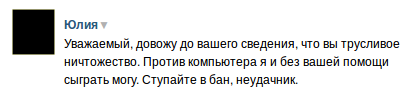

Как я шахматного бота писал
Лет 5 назад я достаточно активно играл в живые шахматы. Потом времени на это стало не хватать и постепенно перешёл на редкие партии в онлайне. Сейчас для игры я использую одно из самых популярных приложений вк. Это проще, чем использовать, к примеру, FICS. Предмет обсуждения появился из-за того, что я как-то раз встретился с соперником, который на все ходы потратил порядка 10 секунд, при этом не допустив значимых ошибок. Тогда я решил написать своего бота, чтобы узнать что с ним будет и столкнусь ли я с какими-нибудь подводными камнями.
Целью было максимально быстрое написание максимально простого решения. Поэтому от разбора протокола я сразу отказался, тем более у меня не было подобного опыта ранее. Была мысль работать с FICS (у меня есть библиотека для работы с их протоколом), но поскольку я там не играю, то и результаты были бы не так интересны, во всяком случае, для меня. Таким образом, я писал простого кликера для приложения вк.
Изначально хотелось найти доску и определить положения всех фигур, это было бы достаточно универсально, хотя и привязало бы меня к OpenCV. Тем не менее, решил не усложнять: можно определять только последний ход, а это можно сделать, проверяя цвет только одного пикселя.
В самом скрипте около 200 строк на python. Очень сильно помогла библиотека chess, которая взяла на себя общение с движком (я использовал stockfish), проверку на допустимые ходы и определение мата. Некоторое время я уделил тому, чтобы сделать бота максимально похожим на человека, чтобы было невозможно выявить, что это бот полностью автоматическими средствами. По пунктам:
- Клик по полю в случайном месте, с распределением по Гауссу, центр которого не совпадает с центром клетки
- Случайное время хода, длительность которого распределена по Гауссу, причём средняя длительность хода изменяется, в зависимости от номера текущего хода.
- Прокладываются дополнительные точки, с распределением по Гауссу, при перемещении курсора от точки к точке.
По факту, всё это было лишним, бан получить не удалось даже при простом клике из начальной точки в конечную.
Примеры работы скрипта можно посмотреть тут и тут, анализы двух сыгранных игр лежат тут и тут (оппонент имеет рейтинг около 2100).
На момент публикации аккаунт вполне жив. Рейтинг достиг некоторого потолка (около 2200), после которого найти игроков примерно равного рейтинга, не являющихся ботами, очень сложно. Сражаться же с ботами сильно сложнее, такую цель я не ставил. Интересно, хоть и ожидаемо, что при наборе рейтинга было достаточно личностей, для которых возможность того, что их нагло обманули, и они играли с ботом была столь неприятна, что они не могли сдерживаться. Например: 
p.s. Уже после создания рабочей версии от одного из оппонентов узнал про lichess.org. Это отличный ресурс на котором кроме, собственно, платформы для игры в шахматы (поддерживается большое количество их вариантов), есть тренировки по дебютам, анализ игр. Самое интересное — ресурс полностью открытый, все исходники есть на github.
В процессе подготовки данного материала узнал про InternetChessKiller, который делает, фактически, тоже самое, что и мой скрипт, но без привязки к какой-то одной игровой площадке. Исходники старых версий можно найти, например, в этом репозитории.
p.p.s. Боты на серверах, предназначенных для людей, играющие в игры, которые предназначены для людей очень сильно мешают людям. Тем не менее, проверять, насколько сильно они мешают не нужно!